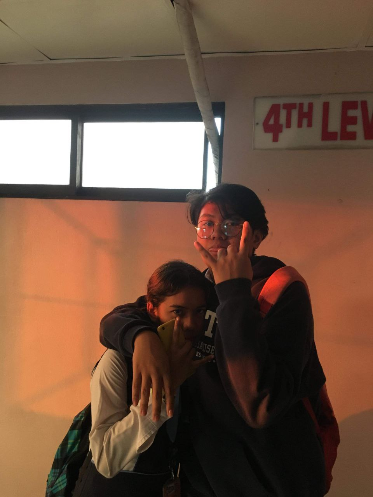

Childhood Years
This is a short story about my childhood years. My birth name is Katherine A. Ayson. I was born on February 7, 2002 in the City of San Fernando, Pampanga and was raised in San Mateo, Rizal. My childhood is nothing special but I have a lot of memories that I still cherish. When I was a kid, I enjoyed school because I got to see my friends at school. I studied preparatory level twice because I did not study both kinder level and nursery level. I was a stubborn kid during my first year in preparatory. I was called 'masungit' and would also get bullied. On my second year of preparatory level, I was playful during free time and active during lectures. Our teacher gives out stickers every time we get a correct answer, and I like stickers! That's why I usually participate during class.
When I was a kid, I love Dutchmill, ampaw, strawberries, and chocolates. Since then, I had a sweet tooth. I am not a picky eater, too. My favorite food that I eat together with rice is ripe mango. People think it's a weird food combination, but for me it's just normal. My childhood dream was to become a singer. That's also the reason why I took voice lessons when I was in grade 2. But I did not join competitions because I was a little bit shy. I was not confident with singing in large crowds. I enjoy singing for fun, though.
Teenage Years
My teenage years are also memorable because I met a lot of people and gained experiences that had an impact with my life and well-being. Before I go to high school, I was given an opportunity to sing in a church choir, I was a Soprano II. I stayed for a couple of months. After some time, I participated in our local diocese's media ministry, which enhanced my skills. I was the illustrator behind this documentary. Looking at it right now, I can say that the illustration is wonky, but when that documentary was published, I was very proud of my work. Well, I still am. We covered events that our diocese held and created AVPs for the monthly schedule of activities. Joining this ministry boosted my communication skills as well as my teamwork skills.
Regarding my academic performance, I was a very active student back then and was able to top the class multiple times. Because of my class standing, I was usually urged to join academic competitions. During junior and senior high school I joined school events, student councils and inter-school quiz bees. In junior high school, I also enjoyed table skirting competitions, which is usually held in our school during nutrition month. When I was in 8th grade, I had a couple of academic achievements. Our group in spelling bee placed 3rd in SPRISA, an inter school competition in San Mateo, Rizal. In the same school year, I was able to receive 6 medals and was a second honor. On my final year on junior high school, I wanted to volunteer in different organizations. PAWS and Red Cross was on my list. I applied but only got into the orientation stage and decided not to push through because I have other commitments. Same on my judo training, I only got to practice the basics. I was a C.A.T officer but then I had to quit because of health reasons. I had to focus on my health too, so I laid back on my last junior year.
Moving to Marikina City for senior high school was a new beginning for me. I chose the General Academic Strand and participated in extracurricular activities. I became one of the board members of the Supreme Student Government and was one of the organizers for an outreach program. I also excelled during senior high and graduated with a good conduct award and with honors. I learned a lot from my new friends and experiences. But the most amazing thing that happened was meeting the love of my life, who made my heart skip a beat.
.jpg) |
.jpeg) |
 |
.jpg)